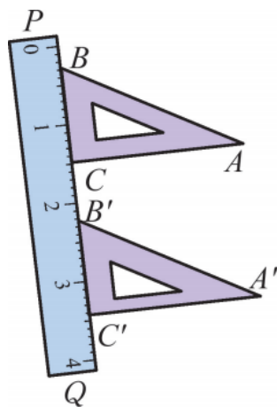
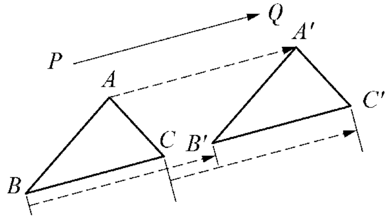
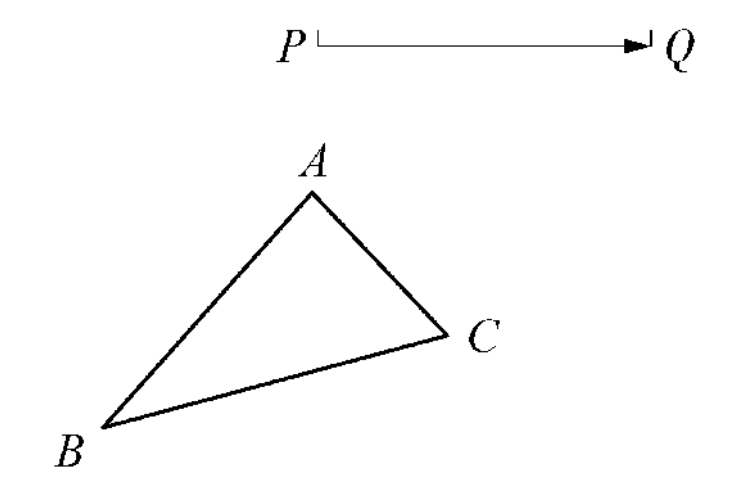
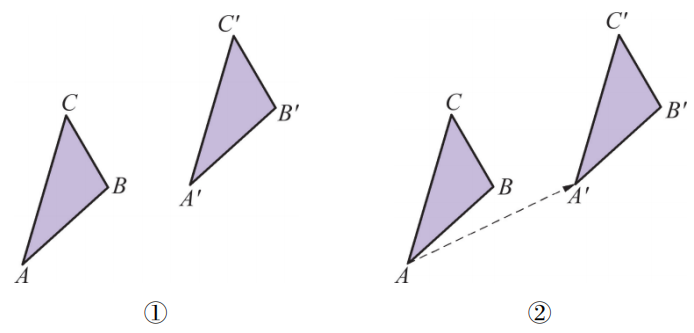
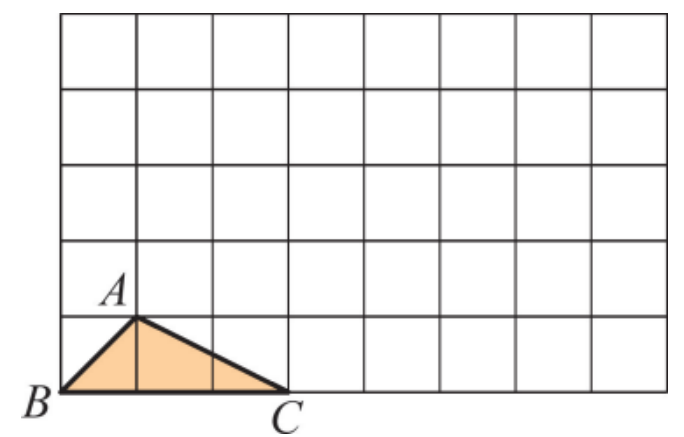
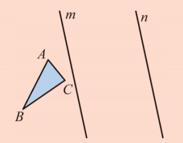
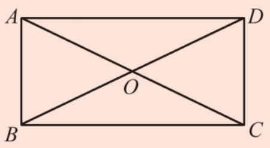
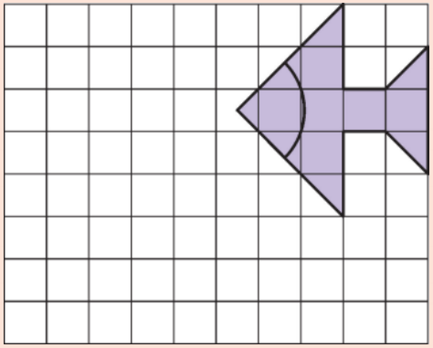
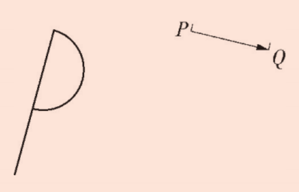

在上一节中，我们学习了平移的概念。那么平移后的图形与原图形之间有哪些不变的关系呢？
如图9.2.6，在画平行线的时候，有时为了需要，将直尺和三角板放在倾斜的位置上。但不管怎样，我们总可以推得
\[A'B' \parallel AB, \quad A'B' = AB, \quad \angle B' = \angle B.\]
同时也有
\[A'C' \parallel \_\_\_\_\_\_, \quad A'C' = \_\_\_\_\_\_, \quad \angle C' = \_\_\_\_\_\_.\]
\[B'C' \text{与} BC \quad \_\_\_\_\_\_, \quad B'C' = \_\_\_\_\_\_, \quad \angle A' = \_\_\_\_\_\_.\]

\(A'C' \parallel AC\)，\(A'C' = AC\)，\(\angle C' = \angle C\)；
\(B'C'\) 与 \(BC\) 在同一直线上（或平行），\(B'C' = BC\)，\(\angle A' = \angle A\)。
观察图9.2.7，△ABC沿着PQ方向平移到△A'B'C'的位置，我们可以看到，△ABC上的每一点都作了相同的平移：
\[A \to A', \quad B \to B', \quad C \to C'.\]

你发现对应点所连的线段有什么特点了吗？
不难发现：
\[AA' \parallel BB', \quad AA' = BB';\] \[AA' \parallel \_\_\_\_\_, \quad AA' = \_\_\_\_\_;\] \[BB' \text{ 与 } CC' \quad \_\_\_\_\_, \quad BB' = \_\_\_\_\_.\]
\(AA' \parallel CC'\)，\(AA' = CC'\)；
\(BB'\) 与 \(CC'\) 平行，\(BB' = CC'\)。
平移后对应点所连的线段平行（或在同一条直线上）且相等。
将图9.2.8中的△ABC沿PQ方向平移到△A'B'C'的位置，其平移的距离为线段PQ的长度。

观察所得到的对应线段和对应点所连的线段是否符合上述我们得到的平移的特征？
符合。对应线段平行且相等，对应点连线平行且相等。
如图9.2.9①，△ABC经过平移到达△A'B'C'的位置。指出平移的方向，并量出平移的距离。（精确到1mm）

解：由于点 \(A\) 与点 \(A'\) 是一对对应点，连结 \(AA'\)，平移的方向就是点 \(A\) 到点 \(A'\) 的方向，平移的距离就是线段 \(AA'\) 的长，经测量可知，约 \(25 \mathrm{~mm}\) 。
在如图9.2.10的方格图中，作出将图中的△ABC向右平移4格后的△A'B'C'，然后再作出将△A'B'C'向上平移3格后的△A''B''C''。△A''B''C''是否可以看成是△ABC经过一次平移而得到的？如果是，请指出平移的方向和距离。

可以。平移方向为从A到A''，距离为5格（勾3股4弦5）。
做一做
如图9.2.11，在纸上作△ABC和平行直线 \(m\) 、 \(n\) 。作出△ABC关于直线 \(m\) 对称的△A'B'C'，再作出△A'B'C'关于直线 \(n\) 对称的△A''B''C''。观察△ABC和△A''B''C''，你能发现这两个三角形有什么关系吗？

△A''B''C''可以看成是△ABC经过平移得到的，平移方向垂直于直线，距离为两条平行线间距离的2倍。
平移不仅是几何中的基本变换，也是艺术设计和日常生活中常用的手法。许多美丽的图案、花边、重复的纹样都是通过基本图形的平移得到的。
例如，图9.2.5中的图案就是由一个简单的基本图形通过多次平移形成的。在建筑装饰、纺织印染、墙纸设计中，平移被广泛用来创造节奏感和连续性。
荷兰著名艺术家埃舍尔（M.C. Escher）就曾利用平移、反射等变换创作了许多经典的镶嵌图案。平移与对称、旋转结合，可以产生千变万化的视觉效果。
在计算机图形学中，平移是最基础的几何变换之一，用于实现动画、游戏中的角色移动、场景滚动等效果。
1. 如图，在长方形ABCD中，对角线AC与BD相交于点 \(O\) ，作出 \(\triangle AOB\) 平移后的三角形，其平移方向为射线 \(AD\) 的方向，平移距离为线段 \(AD\) 的长。

2. 先将方格图中的图形向左平移5格，然后再向下平移3格，作出平移后的图形。

3. 将所给图形沿着 \(PQ\) 方向平移，平移距离为线段 \(PQ\) 的长，作出平移后的图形。

归纳思想： 通过观察多个平移实例，归纳出平移的特征。
几何直观： 利用图形理解平移的不变性。
模型应用： 用平移特征解决作图问题。